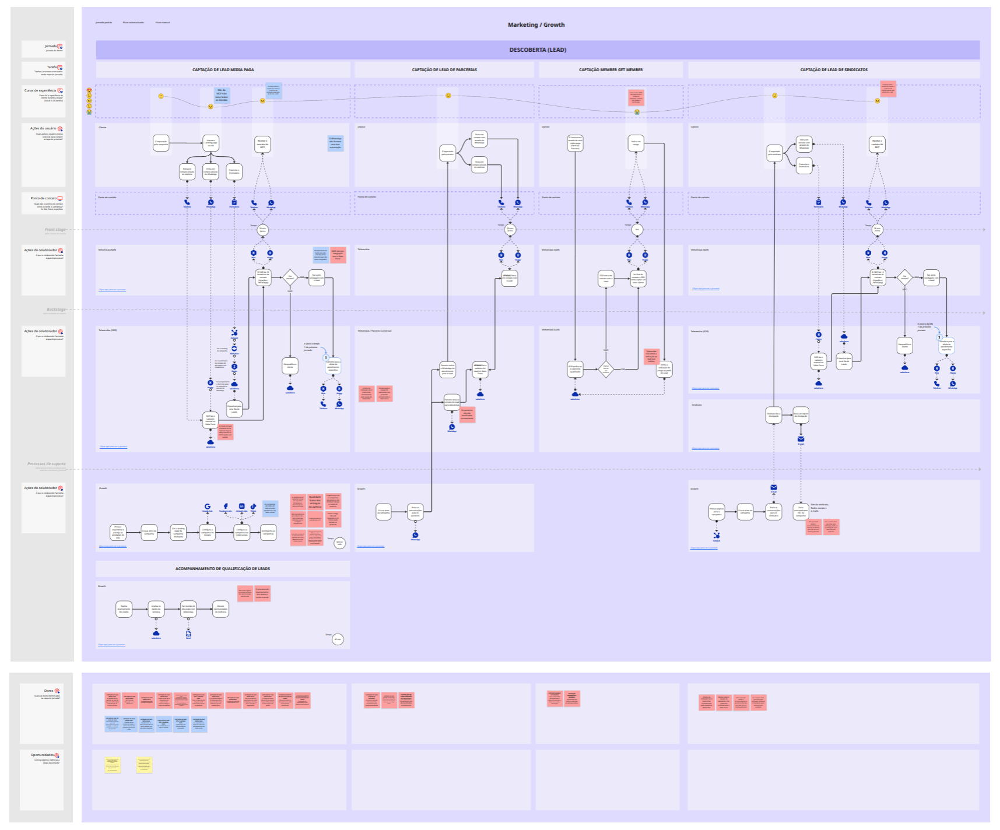
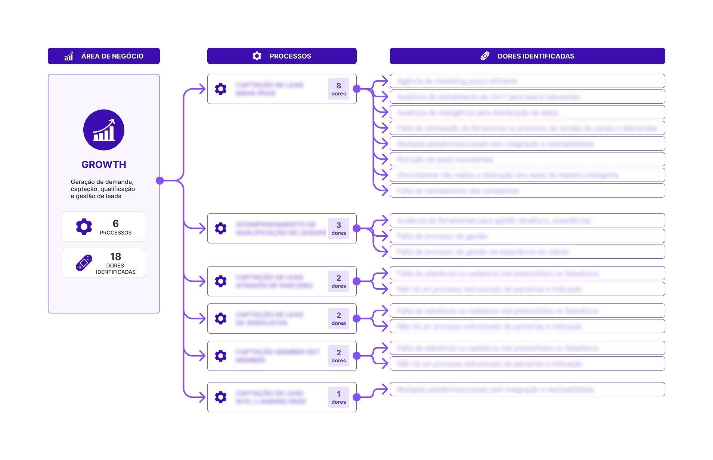
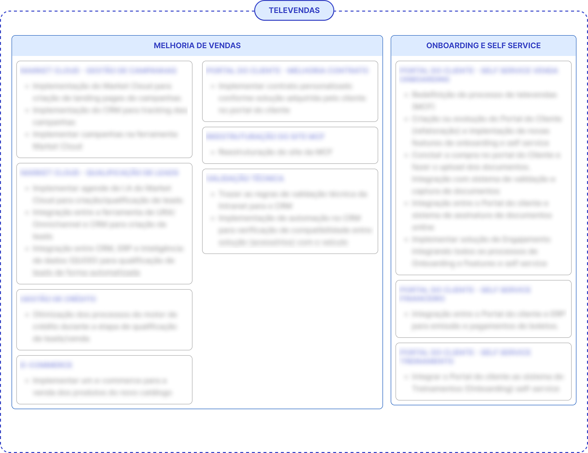

Desafio
Jornada do usuário fragmentada, com alta dependência do atendimento humano e de processos internos burocráticos e manuais.
Service Blueprint
Redesenho da jornada do cliente e reestruturação do backoffice, melhorando processos e integrando sistemas para uma jornada mais fluida, eficiente e centrada no usuário.
Resumo executivo
O objetivo do discovery foi compreender a percepção dos pequenos frotistas sobre à jornada de onboarding (contratação à primeira fatura) entendendo suas expectativas, comportamentos, necessidades e percepções sobre o valor entregue pela solução, mapeando gargalos existentes nos fluxos internos, nos pontos de contato com o cliente, avaliando como a experiência atual impacta diretamente indicadores de negócio, como conversão, ativação, retenção e churn prematuro.
Jornada do usuário fragmentada, com alta dependência do atendimento humano e de processos internos burocráticos e manuais.
Redesenho completo da jornada do cliente e dos processos do backoffice com foco em autoserviço, integrações entre sistemas, automações e inteligência de dados.
Maior eficiência operacional com a redução da dependência do capital humano com a utilização de IA e automação de processos, redução de custos operacionais, aumento da retenção de clientes.
Discovery, entrevistas, cliente oculto, mapeamento de processos, service blueprint, análise de dores e oportunidades e priorização de projetos.
Metodologia
Do entendimento à priorização das oportunidades.
Avaliação da experiência atual sob a perspectiva de um usuário real.
Conversas aprofundadas para entender as dores, comportamentos e expectativas dos clientes.
Entrevistas com colaboradores para mapear os processos atuais e identificar dores, gargalos e oportunidades.
Visualização ponta a ponta da jornada do usuário, com pontos de contato e ações realizadas pelas áreas internas.
Avaliação do impacto, esforço e viabilidade para definição do roadmap de projetos.
Números da primeira fase do projeto
Dedicadas ao mapeamento, análise e validação das jornadas e processos
Entrevistas, workshops e sessões de alinhamento com stakeholders e especialistas.
Times e departamentos participantes de ponta a ponta no mapeamento e validação das jornadas.
Processos detalhados das jornadas, abrangendo todas as etapas e interações.
Oportunidades de melhoria identificadas ao longo de toda a operação.
Juntamente com o mapeamento dos processos, foi realizado o service blueprint para entendermos melhor o funcionamento do serviço bem como as dores dos times de backoffice da MCF. Este entendimento foi fundamental para propormos melhorias na etapa de redesenho dos processos.

O Discovery transformou um conjunto disperso de problemas operacionais em um portfólio estruturado de transformação. As 272 dores identificadas foram consolidadas em 74 dores representativas, agrupadas por similaridade, causa raiz e impacto no negócio. A partir disso, as iniciativas foram organizadas em 38 projetos e 16 programas estratégicos, conectando necessidades reais dos clientes e das áreas internas às oportunidades definidas nos Blueprints TO BE. O resultado foi um roadmap mais claro, priorizável e alinhado à estratégia da MCF, estruturado na lógica: Dores → Iniciativas → Projetos → Programas.

Números da segunda fase do projeto
Tempo total dedicado à construção e consolidação do Blueprint TO BE.
Workshops, alinhamentos e sessões de desenho com áreas de negócio.
PFluxos revisados e otimizados visando eficiência operacional.
Iniciativas identificadas para evolução da experiência e operação.
Projetos estruturantes mapeados para suportar a transformação.
As oportunidades identificadas durante o Discovery foram estruturadas em uma hierarquia de Projetos e Programas Estratégicos, transformando melhorias pontuais em um plano integrado de evolução. Essa organização facilitou a priorização de investimentos, fortaleceu a governança da iniciativa e orientou a construção de um roadmap alinhado aos objetivos estratégicos da Michelin Connected Fleet.
